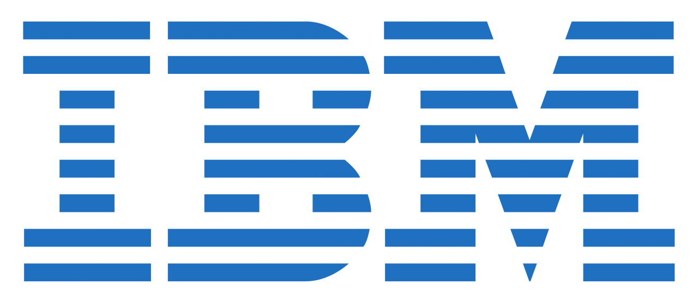
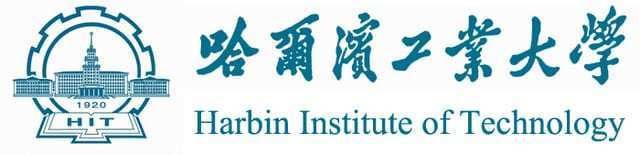

WANG Yong 王勇
Address: Room 4048, 80 Stamford Road, Singapore 178902.
E-mail: yongwang [at] smu [dot] edu [dot] sg
Telephone: +65-68264808
Web: http://yong-wang.org
Short Biography
I am a tenure-track assistant professor at the School of Computing and Information Systems (SCIS), Singapore Management University (SMU). I received my PhD degree in computer science from Hong Kong University of Science and Technology (HKUST), under the supervision of Professor Qu Huamin. Before that, I obtained my B.Eng. and M.Eng. degrees from Harbin Institute of Technology (HIT) and Huazhong University of Science and Technology (HUST), respectively.
My major research interests include Information Visualization, Visual Analytics, Human-computer Interaction and Explainable Artificial Intelligence. My research goal is to develop cutting-edge visual analytics techniques to facilate big data exploration. My research outputs have been applied in different domains including network analysis, online learning, smart factories, Fintech and public speaking training. Part of my research has been covered by medias, including NHK TV, IEEE Spectrum, the Wechat official account of Huawei Noah's Ark Lab.
News
| [Multiple Positions!]: We are looking for self-motivated Ph.D./Mphil Students, RAs and Visiting Interns. Here is the link for more details: [Link]. Drop me an email if interested! | |
| Nov. 2021 | KG4VIS is highlighted by ACM SIGGRAPH blog! |
| Nov. 2021 | Our paper BatchLens is accepted by DATE 2022! |
| Sept. 2021 | Two papers (KG4VIS and M^2Lens) are awarded IEEE VIS 2021 Best Paper Honorable Mention Award! |
| Aug. 2021 | Our survey paper on ML4VIS is accepted by TVCG! |
| Aug. 2021 | Songheng joined our research team and is the first PhD student of the team! Warm welcome! |
| July 2021 | Two papers (KG4VIS and M^2Lens) have been accepted by IEEE VIS 2021! |
| July 2021 | Our short paper (Intercept Graph) is accepted by IEEE VIS 2021 as a short paper! |
| July 2021 | Our paper (DeHumor) is accepted by TVCG! |
| May 2021 | Our research on video analysis was patented and integrated into Own The Room’s virtual training app! |
| March 2021 | iQUANT (Interactive Quantitative Investment) is accepted by EuroVis 2021! |
| Jan. 2021 | Our paper on visual analytics for the proctoring of online exams is accepted by CHI 2021! |
| Sept. 2020 | I join Singapore Management University as a tenure-track assistant professor. |
| Aug. 2020 | Our paper Tradao is accepted as a short paper by IEEE VIS 2020! |
| July 2020 | Our paper on student performance prediction on online learning platforms is accepted by CIKM 2020! |
| July 2020 | Three papers are accepted by IEEE VIS 2020! |
| March 2020 | Our paper RankBooster is accepted as a short paper by EuroVis 2020! |
| Jan. 2020 | EmotionCues (emotion-oriented classroom video summarization) is covered by IEEE Spectrum! |
| Dec. 2019 | PlanningVis is covered by the official WeChat account of Huawei Noah Ark Lab! |
| Dec. 2019 | After a Long March of two years, our paper EmotionCues is finally accepted by TVCG! |
| Dec. 2019 | Two papers are accepted by CHI 2020! |
| Dec. 2019 | Our paper on student performance prediction in online question pools is accepted by LAK 2020! |
| Aug. 2019 | Our poster based on our work in the E-learning project won the Best Poster Award of IEEE VIS 19! |
| July 2019 | Present our TVCG paper on animated transition in SIGGRAPH 2019 in Los Angeles! |
| July 2019 | Our short paper on nonuniform timeslicing of dynamic graphs is also accepted by IEEE VIS 2019! |
| July 2019 | My InfoVis paper DeepDrawing and three coauthored VAST papers are accepted by IEEE VIS 2019! |
| Jan. 2019 | Our paper PeerLens has been accepted by CHI 2019! |
| Oct. 2018 | Our project Babyface is covered by Japan NHK TV on Oct. 24, 2018: Japanese Version (starting from 3:35m) and English Version (starting from 1:36m). |
| Oct. 2018 | Present our TVCG paper on animated transition in IEEE VIS 2018. |
| Oct. 2018 | Our paper on using deep learning to evaluate graph drawing readability is accepted by IEEE CGA! |
| June 2018 | Give a talk about our business review comparison work in EuroVis 2018. |
| March 2018 | One paper is accepted by EuroVis 2018. |
| Jan. 2018 | One coauthored paper is accepted by Micron. |
| Nov. 2017 | One coauthored paper is accepted by ACM TiiS. |
| Aug. 2017 | Two papers are accepted by ACM TiiS and TVCG respectively. |
| June 2017 | One coauthored paper is accepted by IEEE VIS 2017. |
| May 2017 | One coauthored paper is accepted by KDD 2017. |
| March 2017 | One coauthored paper won IUI best paper Award. |
| June 2016 | Workded as a visiting research scholar (intern) in IBM Thomas J. Watson Research Center from June to December, 2016. |
| Oct. 2015 | Present AmbiguityVis in IEEE VIS 2015 at Chicago and worked as a student volunteer. |
| July 2015 | Our paper AmbiguityVis is accepted by IEEE InfoVis 2015! |
| ...More... |
Awards and Honors
2021
- IEEE VIS 2021 Best Paper Honorable Mention Awards
2019
- IEEE VIS 2019 Best Poster Award
2018-2020
- Funded by the PH-ITF program of Innovation and Technology Commission of Hong Kong
2017
- ACM IUI 2017 Best Paper Award
2016
- HKUST Overseas Research Award
2013
- National Scholarship
2011-2013
- HUST Postgraduate Scholarship for 3 times
2012
- Outstanding Student Leader of HUST
2008-2011
- People's Scholarship for 6 times
2009
- Second Prize of Bionic Robot Contest of HIT
2007
- Merit Student of Hunan Province
Media Coverage
2021
- KG4VIS is highlighted by ACM SIGGRAPH blog.
2021
- Our recent work KG4Vis and M2Lens are highlighted by the official website of SMU.
2020
- EmotionCues (emotion-oriented classroom video summarization) is covered by IEEE Spectrum.
2019
- PlanningVis is covered by the official WeChat account of Huawei Noah Ark Lab.
2018
- Our project Babyface is covered by Japan NHK TV: Japanese Version and English Version.
Working/Research Experience
| 2020~now |
| |
| 2018~2020 |
| |
| 2016 |
|  |
| 2014 |
| |
| 2009~2011 |
|  |
Students
| Now@SMU | Songheng Zhang, PhD student (BS @ University of California Irvine), since Aug. 2021. |
| Shaolun Ruan, Remote Visiting Student from Kent State University, since Sept. 2020. | |
| Carmen Yip, Undergraduate Research Assistant, since Nov. 2020. Co-advised with Prof. Kotaro Hara. | |
| Kim Siang Yeo, MITB Student, since Nov. 2021. | |
| Yi Zhe Ang, Remote Visiting Student from National University of Singapore, since Nov. 2021. | |
| Prior@SMU | Jie Mi Chong, Undergraduate Research Assistant, Nov. 2020 - May 2021, Co-advised with Prof. Kotaro Hara. |
| Haotian Li, Visiting Research Student from HKUST, Feb. 2021 to Sept. 2021. | |
| Haonan Xu, Master Student, Dec. 2020 - June 2021. | |
| @HKUST | Haotian Li, Research assistant and PhD student, HKUST |
| Zhihua Jin, previously research intern and now PhD student, HKUST | |
| Xingbo Wang, PhD student, HKUST | |
| Huan Wei, PhD student, HKUST | |
| Dong Sun, PhD student, HKUST | |
| Haipeng Zeng, PhD student, HKUST | |
| Kento Shigyo, Mphil student from Kobe University, visited HKUST for 3 months | |
| Hammad Haleem, Mphil student, HKUST (now at Goldman Sachs) |
Teaching
| 2021/22 Term 1 | Lecturer, IS428: Visual Analytics for Business Intelligence, G1 & G2, SMU. |
| 2021/22 Term 1 | Lecturer, IS111: Introduction to Programming, G11, SMU. |
| 2020/21 Term 2 | Lecturer, CS421: Introduction to Machine Learning, G2, SMU. |
| 2020/21 Term 2 | Supervisor, IS483: IS Project Experience (Applications), SMU. |
| 2016 Spring | Teaching Assistant, Comp2012: Object-Oriented Programming and Data Structures, HKUST. |
| 2015 Fall | Teaching Assistant, Comp1022p: Introduction to Computing with Java, 2015 Fall, HKUST. |
| 2015 Spring | Teaching Assistant, Comp2012: Object-Oriented Programming and Data Structures, HKUST. |
Academic Services
| PC Member |
|
| Conference Reviewer |
|
| Journal Reviewer |
|